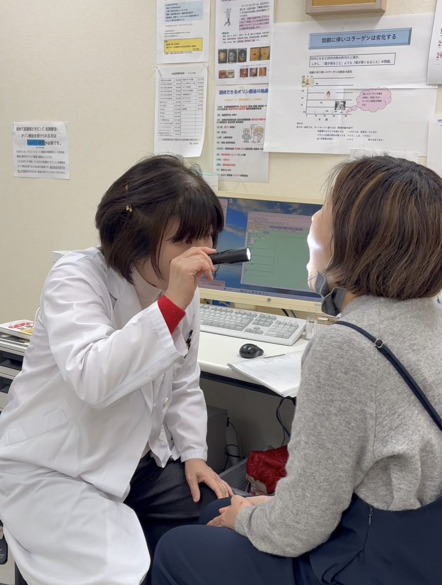

発熱・かぜ・インフルエンザなどの急性疾患から、高血圧・糖尿病・脂質異常症などの生活習慣病まで、幅広く診察いたします。
「なんとなく体調が優れない」「健康管理をしたい」といったご相談もお気軽にどうぞ。
ストレスや心理的な要因から生じる身体症状・こころの不調を、丁寧に診察いたします。うつ・不安・不眠など、ひとりで抱え込まずにお気軽にご相談ください。
患者さまのペースに合わせた治療を心がけています。
患者さまの体質・体調・生活習慣を丁寧に問診し、一人ひとりに合った漢方薬を処方いたします。西洋医学では改善しにくい症状や、慢性的な体質の悩みにも対応しています。
漢方と西洋医学を組み合わせた統合的なアプローチで、根本からの健康回復をサポートします。
初診の方は保険証をお持ちください。お電話でご予約いただくとスムーズです。お気軽にご相談ください。